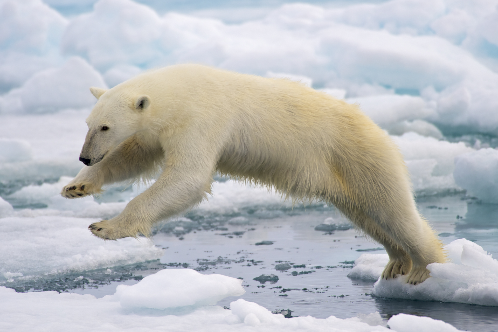
01
Ice Bear nhảy.
Băng mùa hè vỡ thành từng mảng. Muốn đi tiếp thì phải bật qua.
81°N · Biển băng phía bắc Svalbard
Không phải hoạt hình. Đây là thật.
Di chuột trên mặt nước · Cuộn xuống
Ảnh: Mario Hoppmann / NASA
01 — Chân dung
Ít lời. Điềm tĩnh. Làm được mọi thứ. Ngoài đời thật, Ice Bear nặng nửa tấn, đi bộ hàng nghìn cây số mỗi năm trên mặt biển đóng băng, và chưa từng kể với ai về điều đó.
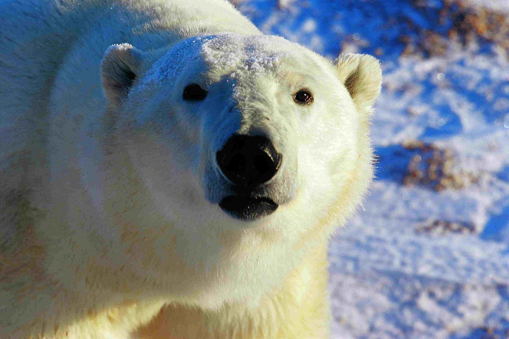
02 — Trên băng
Cuộn tiếp. Ảnh chụp thật, không chỉnh sửa nhân vật.

Băng mùa hè vỡ thành từng mảng. Muốn đi tiếp thì phải bật qua.
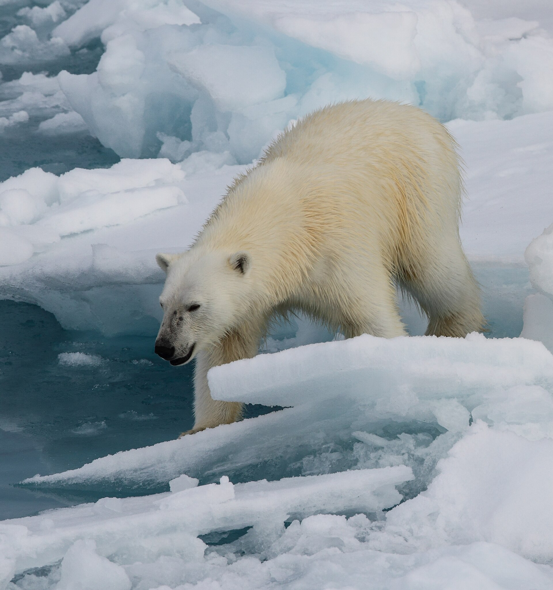
Mỗi bước đều thử độ chắc của băng trước khi dồn trọng lượng.
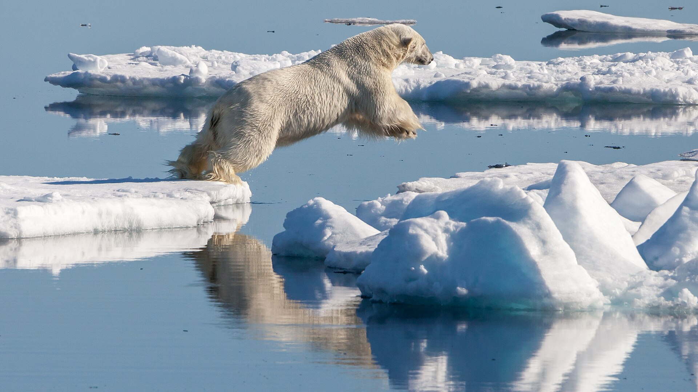
Vùng băng trôi phía bắc Svalbard, mặt biển phẳng như gương.
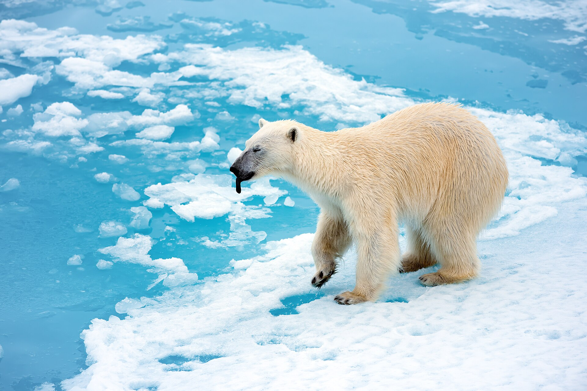
Nước băng tan đọng thành những hồ màu ngọc trên mặt băng.
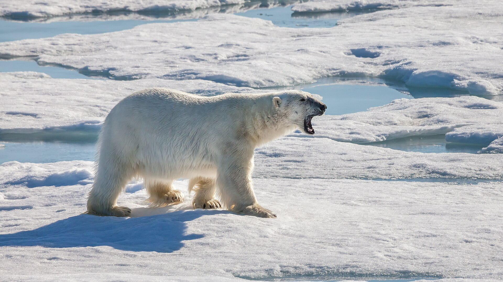
Hiếm khi. Lần này là sau một cuộc săn hải cẩu không thành.
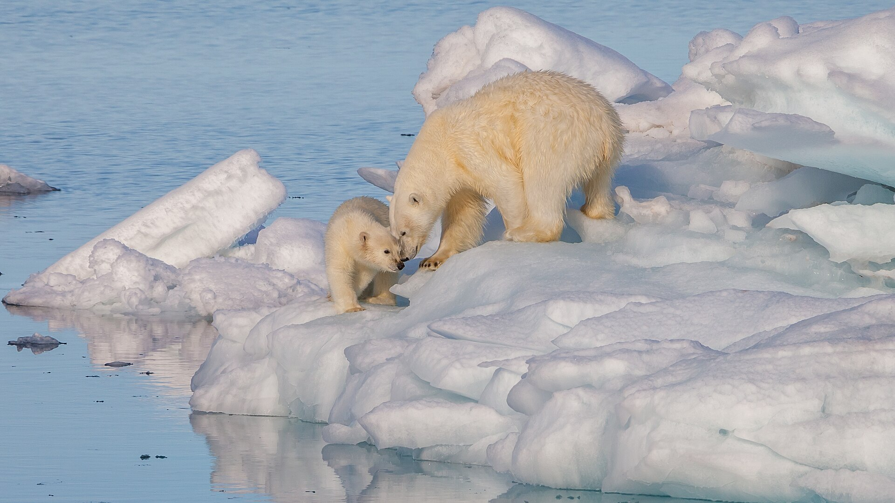
Gấu con theo mẹ hơn hai năm để học cách sống trên băng.
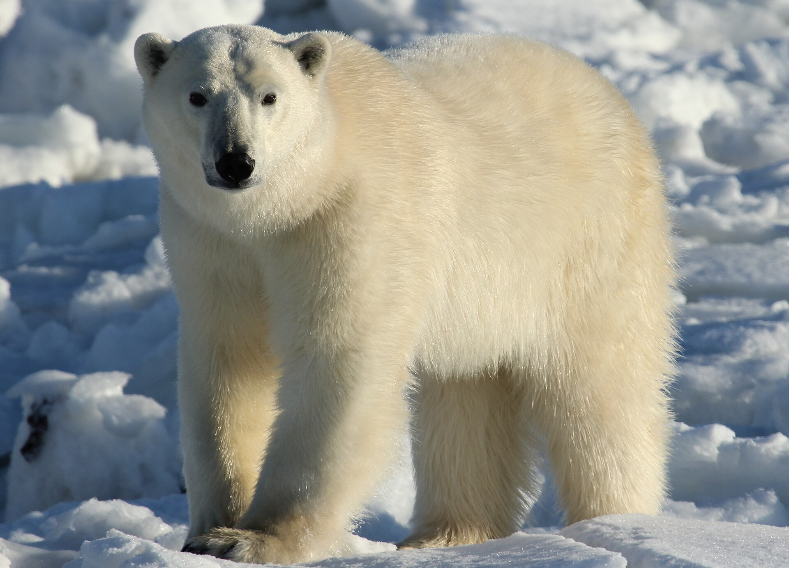
Ice Bear đã thấy bạn từ trước khi bạn thấy Ice Bear.
03 — Phim tư liệu · Alaska
Băng biển là mặt đất duy nhất mà Ice Bear có. Không có băng, không có đường về.
04 — Số đo
Một gấu đực trưởng thành cỡ lớn.
Chạy nước rút trên băng.
Bơi, chân trước làm mái chèo.
Và lớp da dưới bộ lông trắng màu đen.
Phim: NASA · chiến dịch bay ARCSIX trên băng biển Bắc Cực
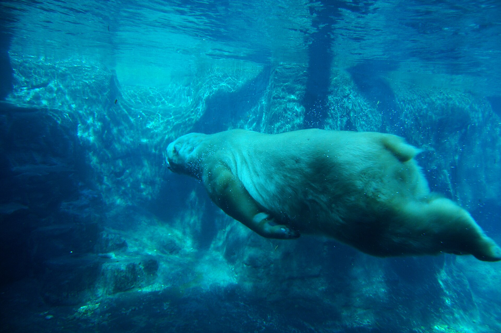
05 — Dưới nước
3 phútIce Bear có thể nín thở hơn ba phút cho một lần lặn.
10 cmLớp mỡ dày cả gang tay giữ ấm giữa làn nước dưới 0°C.
30 cmBàn chân trước to như cái đĩa, vừa là giày tuyết vừa là mái chèo.
Ảnh: Rob Oo · Ludovic Bertron (ảnh dưới nước chụp trong bể kính)
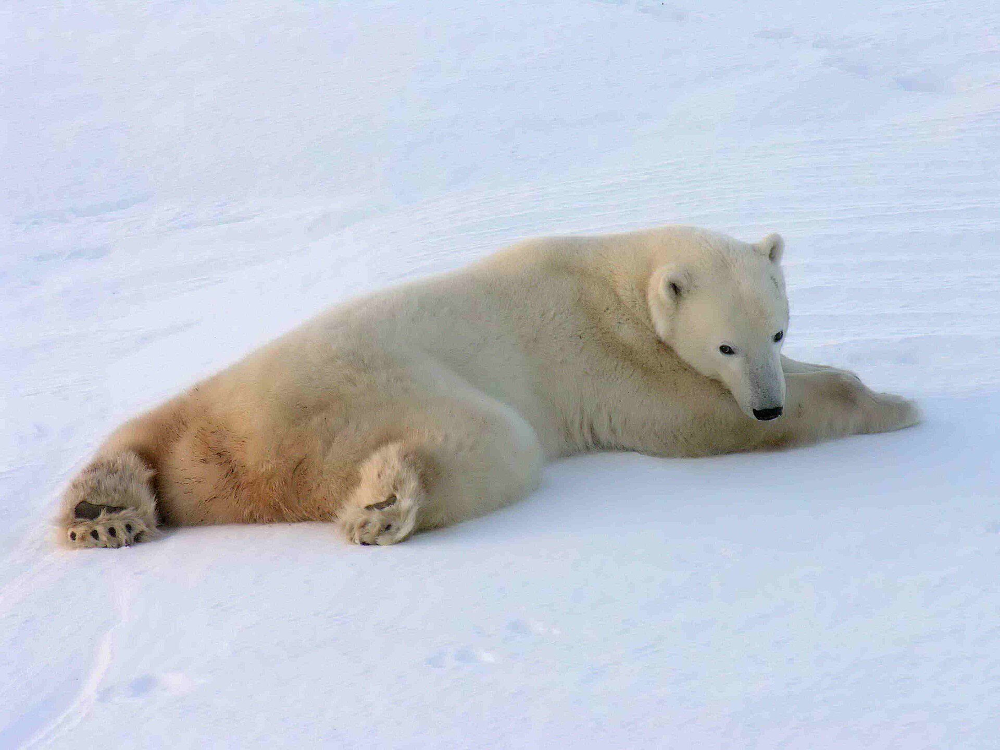
06 — Giờ nghỉ
Trong phim là cái tủ lạnh. Ngoài đời là một hố tuyết, lưng quay về hướng gió, mũi giấu dưới bàn chân.
07 — Đêm cực · Hỏi Ice Bear
Ice Bear đang nghe.
08 — Ngôi nhà đang tan
Gấu Bắc Cực cần băng biển để săn mồi, di chuyển và nuôi con. Mỗi mùa hè, mặt băng ấy lại nhỏ đi một chút.
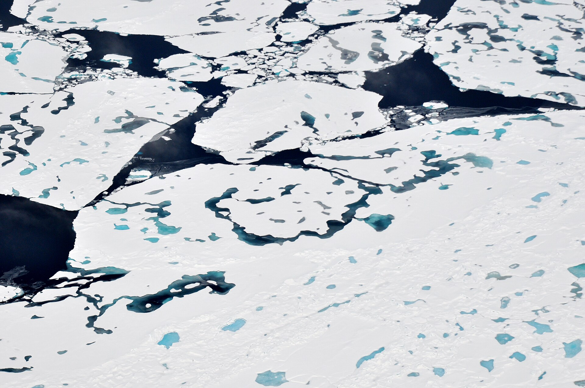
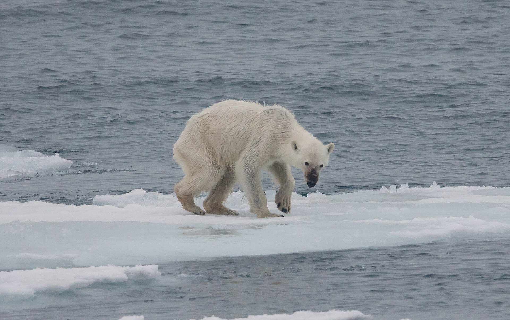